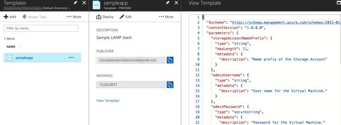
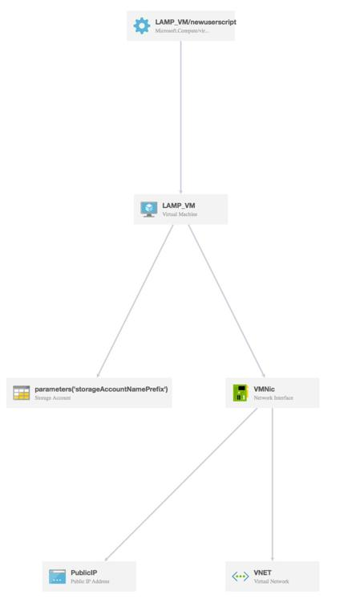
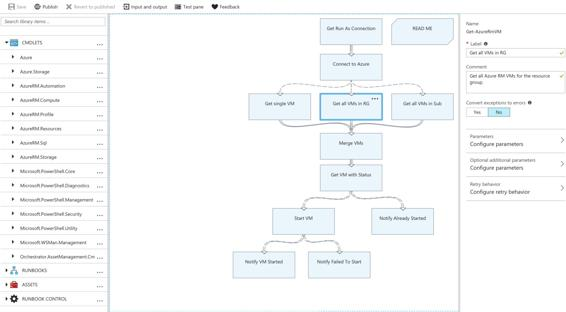

Infrastructure as code
As discussed in the previous chapter as well, one of the key cloud automation techniques is to manage infrastructure-as-code, so that effective DevOps practices can be implemented. Like AWS offers Amazon CloudFormation, in a very similar manner, Azure has a service called Azure Resource Manager (ARM) Templates. Using this service, users can create standardized, repeatable JSON-based templates, which can be used to provision entire application stacks as a single entity to a resource group. The Azure portal provides an interface to directly author/edit the template there, or if users prefer an IDE-based development, then Visual Studio Code also offers extensions using which makes it easy to author ARM templates. The visual editor in the Azure portal also helps detect any JSON syntactical errors (such as missing commas curly braces, and so on), but semantic validations are not supported. Once you have finalized the template, you can deploy it either directly using the Azure portal, or even use CLI, PowerShell, SDKs, and so on to create your application environments. If there's any error during the template deployment phase, ARM provides debugging as well as output details, which comes in handy for evaluating progress and correcting any issues. Unlike AWS CloudFormation, ARM templates don't support YAML, which is more human-readable and generally more concise than JSON.
In order to effectively use Visual Studio Code to develop ARM templates, refer to the following blog post: https://blogs.msdn.microsoft.com/azuredev/2017/04/08/iac-on-azure-developing-arm-template-using-vscode-efficiently/.
One differentiating feature for Azure Resource Manager is around subscription governance, wherein the account owner can register for a resource provider to be configured with your subscription. Some resource providers are registered by default, whereas for the majority, the user has to opt for them using a PowerShell command such as the following:
Register-AzureRmResourceProvider -ProviderNamespace Microsoft.Batch
Azure team has a GitHub repository where it hosts hundreds of sample templates for ARM. So, taking a basic example of a LAMP stack from there, it can be easily used to create a new template in ARM from the Azure portal, as follows:

A snippet of that same LAMP stack template is as follows, and the complete template is available at: https://github.com/Azure/azure-quickstart-templates/tree/master/lamp-app:
{
"$schema": "https://schema.management.azure.com/schemas/2015-01-01/deploymentTemplate.json#",
"contentVersion": "1.0.0.0",
"parameters": {
"storageAccountNamePrefix": {
"type": "string",
"maxLength": 11,
"metadata": {
"description": "Name prefix of the Storage Account"
}
},
"adminUsername": {
"type": "string",
"metadata": {
"description": "User name for the Virtual Machine."
}
},
......
......
......
......
{
"type": "Microsoft.Compute/virtualMachines/extensions",
"name": "[concat(variables('vmName'),'/newuserscript')]",
"apiVersion": "2015-06-15",
"location": "[resourceGroup().location]",
"dependsOn": [
"[concat('Microsoft.Compute/virtualMachines/', variables('vmName'))]"
],
"properties": {
"publisher": "Microsoft.Azure.Extensions",
"type": "CustomScript",
"typeHandlerVersion": "2.0",
"autoUpgradeMinorVersion": true,
"settings": {
"fileUris": [
"https://raw.githubusercontent.com/Azure/azure-quickstart-templates/master/lamp-app/install_lamp.sh"
]
},
"protectedSettings": {
"commandToExecute": "[concat('sh install_lamp.sh ', parameters('mySqlPassword'))]"
}
}
}
]
}
Unlike Amazon CloudFormation, ARM doesn't provide a visualization option natively, but there are tools available online that can help. The following is one such visualization of the LAMP stack template that's generated using http://armviz.io/editor/4:

Now, as described previously, you can easily define an entire stack in an ARM template, but you often need more elaborate, step-by-step (sequential or parallel) orchestration across different systems and services. Sometimes, you also want to trigger that workflow, based on some events, such as code changes in GitHub. So, for those comprehensive types of orchestration tasks, Azure has a service called Azure Automation. Using this service, you can create either a textual runbook where you directly write a PowerShell or Python script/module that defines your business logic, or if you don't want to directly interact with the code that much, then there's a graphical runbook mode as well. In the latter, you have a canvas in the Azure Automation portal, where you can create various individual activities from a broad variety of library items, define configuration for all the activities, and link them together to run a complete workflow. Before actually deploying that workflow, you can also test it there itself and debug or modify it based on results and logging output.
The following is a sample graphical runbook that's available in the Azure Automation Gallery, which connects to Azure using an Automation Run As account and starts all V2 VMs in an Azure subscription, in a resource group, or a single named V2 VM. As you can see in the following screenshot, on the left-hand side are PowerShell cmdlets, other runbooks, and assets (credentials, variables, connections, and certificates), which can be added to the canvas in the center to modify the workflow. On the right-hand side is the configuration screen, where settings for each of the activities can be updated and their behavior defined as per the required business logic:
